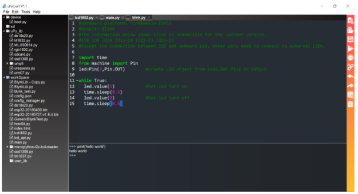
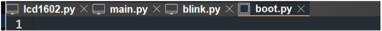
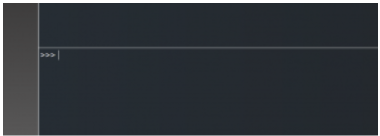

3. Làm quen với phần mềm uPyCraft IDE
Giao diện
{kind=link}
Cây thư mục bên tay trái: hiển thị danh sách các file và thư mục trong file system của board đang kết nối và của máy tính.
Device:là thư mục chứa file system internal của board đang được kết nối.
SD:là thư mục chứa các file của thẻ nhớ SD gắn với board (nếu có) đang kết nối.
uPy_lib:chưa một số các thư viện cung cấp sẵn bởi uPyCraft.
Cửa sổ soạn thảo Edit box bên tay phải: là nơi hiển thị và hỗ trợ soạn thảo nội dung các file code để upload.
Terminal bên dưới khu vực soạn thảo code: đây là command-line của micro-python, giúp chúng ta dễ dàng tương tác với board, có thể chạy trực tiếp các lệnh hoặc stop các chương trình đang chạy bằng Ctrl+C. Đây cũng là cửa sổ giúp chúng ta in ra các thông tin trong quá trình debug.
Toolbar bên phải:
{kind=link}
Right-click menu trong cây thư mục
Khi bạn chọn một file trong phần Device ở cây thư mục bên tay trái và right click, menu sau sẽ hiển thị:
{kind=link}
Quản lý file trong uPyCraft
Khi sử dụng uPyCraft, bạn cần phân biệt nơi lưu file vì bạn có thể lưu file thẳng vào board hay lưu trên máy tính.
Nếu file đang mở nằm trên máy tính, biểu tượng sẽ là hình laptop. Ngược lại nếu file được lưu trên board, biểu tượng sẽ là hình một con chip hình vuông (giống một con CPU Intel trên máy tính).
{kind=link}
Kết nối với board
{kind=link}
{kind=link}
{kind=link}
Để làm việc với board, sau khi bạn nối dây cáp micro usb với máy tính qua cổng usb, bạn chọn loại board là esp32 và cổng COM tương ứng. Khi đó nếu board đã được nạp firmware micropython thì uPyCraft sẽ kết nối với board và cửa sổ command-line sẽ có dấu nhắc >>>. Nếu báo lỗi kết nối, bạn thử reset board vài lần và kết nối lại thử. Trong quá trình làm việc với board trong uPyCraft, bạn có thể ngắt kết nối hoặc kết nối lại với board thông qua chức năng connect/disconnect trong toolbar bên tay phải hoặc top menu.